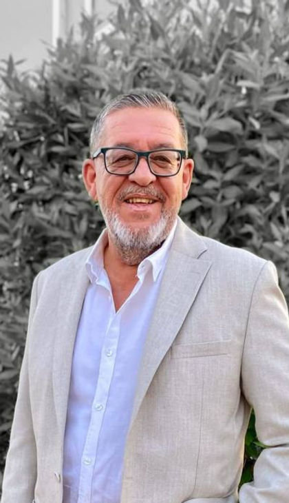
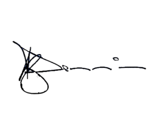
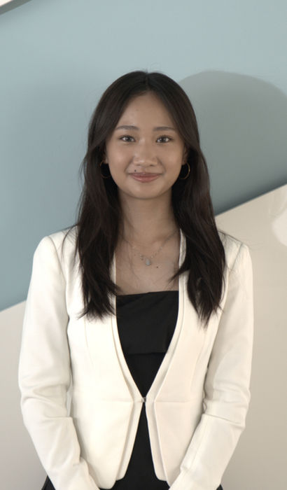
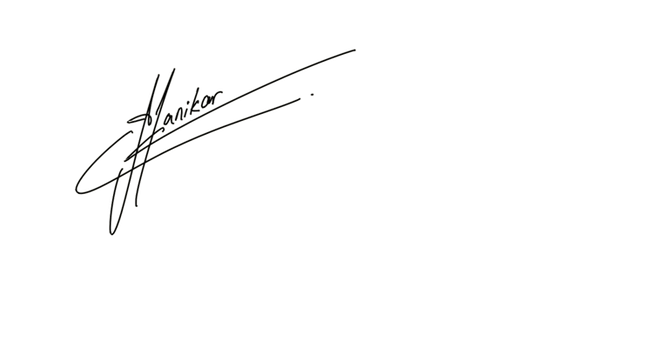

AUPPHS-FA Model United Nations III
Restoring Global Peace Beyond Political Borders
United for a Better Change
The AUPP High School – Foxcroft Academy Model United Nations returns for its third edition on October 23–25, 2026, hosted at the American University of Phnom Penh.
Over three days, delegates from schools across Cambodia take part in ten committees — JGA1, DISEC, ECOFIN, SOCHUM, HRC, the Security Council, UNESCO, the International Court of Justice, Press Corps, and the conference’s first-ever Historical Crisis Committee — under the theme Restoring Global Peace Beyond Political Borders.

Joseph C. Dennis
Our Model United Nations Conference is a platform dedicated to fostering global awareness, diplomatic skills, and critical thinking. We aim to create a dynamic environment where students can engage in meaningful debate, develop leadership qualities, and explore international issues from diverse perspectives. We are excited to offer an inspiring and productive experience for all participants. Together, let's work towards making a positive impact on the world.

Profile
Ly Kanikar
Dear distinguished delegates, honorable chairs, esteemed directors, and respected guests,
I am Kanikar Ly, and it is my greatest honor and privilege to welcome you to the third edition of the AUPPHS-FA Model United Nations.
This year’s theme, “Restoring Global Peace Beyond Political Borders,” reminds us that peace extends beyond geography and requires global cooperation in an increasingly divided world.
As Secretary-General, I am excited to witness the engaging debates and meaningful discussions that will take place throughout this conference. I encourage every delegate to embrace the spirit of diplomacy and make the most of this unforgettable experience.
On behalf of the Executive Committee, I sincerely thank all delegates, chairs, and directors for your dedication and participation. We are truly honored to have you with us.
Warmest Regards, Kanikar Ly

ProfileSecretariat
The student team organising AUPPHS-FA MUN III, with their welcome letters.
SecretariatCommittees
Agendas, chair teams and Chair Reports for every committee.
CommitteesSchedule
Day-by-day programme from opening ceremony to awards.
ScheduleContact
Instagram, venue map and chair contacts.
Contact